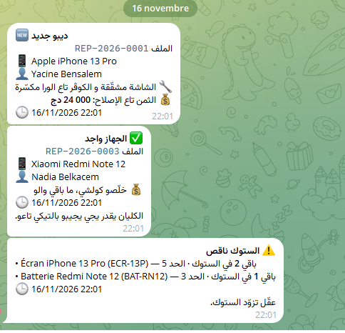
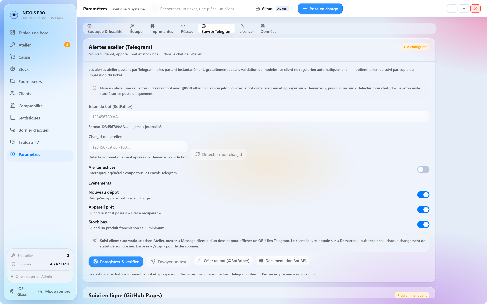
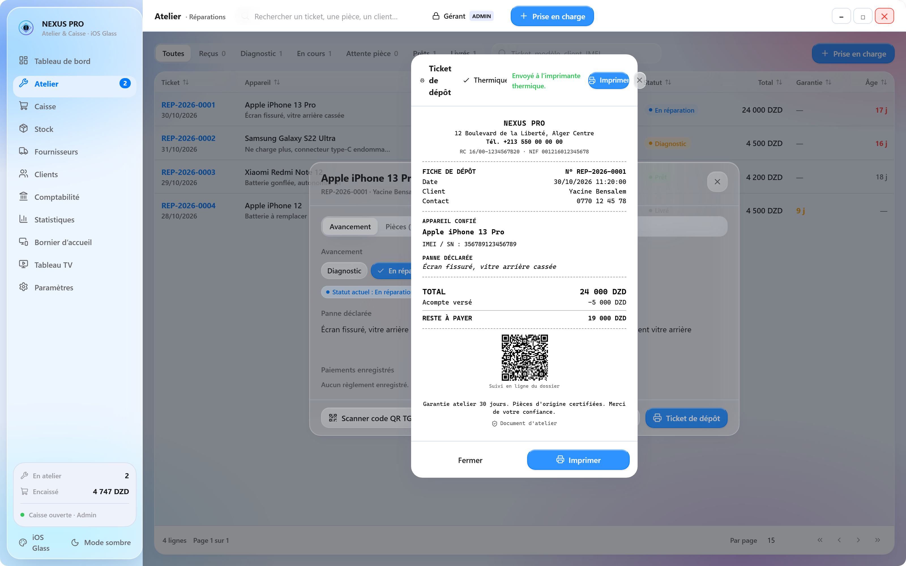

1 — Suivez vos réparations en ligne
Chaque dossier de réparation a sa propre page… Le client voit le statut à tout moment, de n'importe où.

- Le ticket remis au client contient un QR — il le scanne avec son téléphone et arrive directement sur la page de son dossier.
- Un statut clair et en français : appareil reçu, en réparation, pièce attendue, prêt à récupérer…
- Il se met à jour tout seul : à chaque changement de statut dans l'atelier, la page bouge avec vous — sans que le client n'ait à appeler.
2 — Un bot Telegram informe l'atelier de ce qui se passe
Des alertes immédiates dans le chat de l'atelier : nouveau dépôt, appareil prêt, stock bas.

- Nouveau dépôt — à chaque appareil entré dans l'atelier, le bot vous prévient aussitôt.
- Appareil prêt — dès que la réparation passe « prêt à récupérer », vous savez ce qu'il reste à encaisser.
- Stock bas — la pièce passe sous le seuil, l'alerte arrive avant qu'il ne soit trop tard.

3 — Le client reçoit les mises à jour lui-même sur Telegram
Depuis l'atelier : « Message au client » vous donne un QR / lien — le client appuie sur « Démarrer », puis reçoit chaque changement de son dossier.

- Le ticket contient un QR de suivi — chaque ticket s'imprime avec son code, le client n'oublie jamais où est son appareil.
- Sans SMS et sans frais — Telegram est gratuit, il fonctionne sur Internet.
- La confidentialité est préservée — le client ne voit que son dossier, sans compte et sans complication.
Qui peut utiliser NEXUS PRO ?
Tout atelier qui répare des téléphones : donnez un ticket, suivez la réparation, enregistrez les pièces, encaissez… et consultez votre bilan chaque jour.